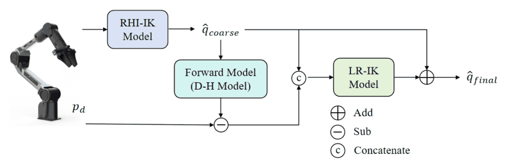
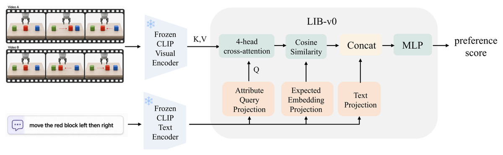

I am a Ph.D. candidate at the School of Intelligence Science and Technology, Peking University (advised by Prof. Xihong Wu). My research is on embodied intelligence, focusing on robot perception and manipulation: monocular 6D object pose estimation, language-guided grasping, inverse kinematics, and visual closed-loop control. I have published 8 papers, 7 of them as first author, in venues including Pattern Recognition, IROS, and EMNLP. I also have more than four years of industry R&D experience (including internships), during which I led a robotic-arm algorithm team of 3–5 people.
Education
Ph.D. in Computer Science and Technology
Peking University, School of Intelligence Science and Technology- Research on monocular-vision-guided robotic manipulation, advised by Prof. Xihong Wu; published at Pattern Recognition, IROS, EMNLP, etc.
- Reviewer for IEEE/RSJ IROS (2025, 2026), IEEE ICRA (2025), and AAAI (2026).
- Participant in Sub-project 3 of a National Key R&D Program of China project (2023YFC3304800).
- Helped mentor 10+ students in computer-vision research training.
M.S. in Operations Research and Cybernetics
Jilin University, School of MathematicsGraduate studies in operations research and cybernetics.
B.S. in Statistics
Jilin University, School of MathematicsUndergraduate studies in statistics.
Work Experience
Head of Robot Algorithm R&D (Intern)
Nanjing Future Brain Technology Co., Ltd.Responsible for R&D in embodied-AI algorithms, robot policy learning, and motion control; led an algorithm team of 3–5 people and drove the development and real-robot deployment of industrial robot manipulation systems.
Algorithm R&D
- VLA model adaptation: Reproduced OpenVLA and completed multimodal input handling, action-token decoding, and adaptation to the robot's action space, connecting the vision-language model to the robotic-arm control pipeline.
- Imitation learning and action generation: Trained robot manipulation policies with ACT and Diffusion Policy, implementing action chunking, conditional diffusion-based action generation, and receding-horizon execution to improve continuity in multi-step manipulation.
- Policy evaluation and optimization: Set up controlled comparisons between ACT and Diffusion Policy on task success rate, inference latency, and trajectory smoothness, and improved action executability with inverse kinematics and closed-loop control.
Real-Robot Deployment and Engineering
- Long-horizon robot manipulation: For carton deformation and multi-stage folding, developed visual localization and stage-wise motion planning methods, and completed prototype validation and engineering deployment on several robot models.
- Team and system R&D: Organized a 3–5 person team through algorithm development, system integration, real-robot debugging, and industrial project delivery.
Computer Vision Algorithm Engineer
Lingban Instant Intelligence Technology, BeijingDeep Visual Perception and Recognition Systems
- Responsible for the R&D of face detection, face recognition, object detection, and OCR algorithms, covering the full process from image preprocessing and deep-learning model training to integration with business systems.
- Completed the development of a face detection and recognition system and applied it in real business scenarios.
Computer Vision Algorithm Intern
Lingban Instant Intelligence Technology, BeijingComputer-vision algorithm research and engineering practice.
Publications
-

MASt3RGrasper: A Real-Time Language-Guided Robotic Grasping Approach with Minimal RGB Images
IEEE/RSJ International Conference on Intelligent Robots and Systems (IROS)
-

-

RHI-LR-IK: Fast High-Precision Two-Stage Neural Inverse Kinematics Solver
IEEE/RSJ International Conference on Intelligent Robots and Systems (IROS)
-

When Paraphrases Break Binding: A Lexical Cliff in Small Heads over Frozen CLIP Text Embeddings
Conference on Empirical Methods in Natural Language Processing (EMNLP) Main Conference · CCF-B
-
TrajDiff: Diffusion-Based Trajectory Generation with 3D ESDF Scene Understanding
International Conference on Intelligent Computing (ICIC) Oral
-
Two-stage Monocular 6D Pose Estimation for Small Cubic Objects
International Conference on Intelligent Computing (ICIC)
* Corresponding author